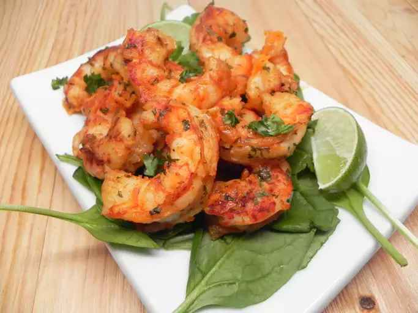

Pan Fried Shrimp

This pan-fried shrimp recipe features small bay shrimp cooked on the stove with simple seasoning. You can add other seasonings if you like.
Ingredients
- Butter
- Shrimp
- Lemon Juice
- Garlic Salt
- Salt/Pepper
How To Cook
- Melt 6 tablespoons butter in a large skillet over high heat. Add shrimp; cook and stir in hot butter until browned, about 2 minutes. Reduce heat to medium-low.
- Stir in 1 1/2 teaspoons lemon juice, garlic salt, salt, and pepper; cook until heated through, about 1 minute. Remove from heat; stir in remaining 2 tablespoons butter and 1 1/2 teaspoons lemon juice.
Enjoy!